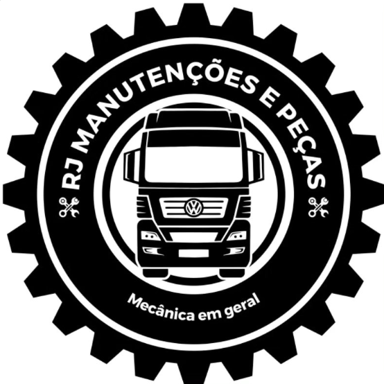
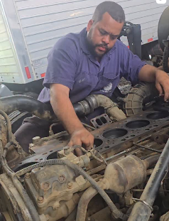
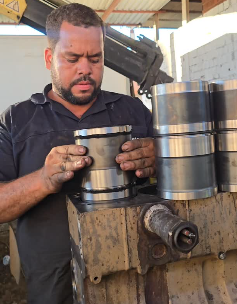
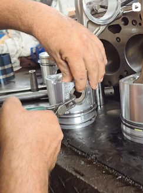
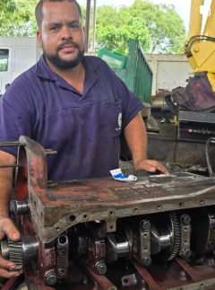

Motor, câmbio, diferencial, elétrica e diagnóstico. Plantão 24 horas para o seu caminhão não ficar parado.


A Oficina RJ Manutenções e Peças fica em Itabuna-BA e é especializada em caminhões. Cuidamos de motor, câmbio, diferencial, elétrica e diagnóstico, e também trabalhamos com peças, para você resolver tudo no mesmo lugar.
Se o caminhão não pode esperar, temos plantão 24 horas: é só ligar. Para orçamento e agendamento, chame no WhatsApp.
Manutenção e reparo para caminhões, do diagnóstico ao conserto.
Reparo e manutenção do motor do seu caminhão.
Manutenção e reparo de câmbio.
Revisão e reparo do diferencial.
Diagnóstico e reparo da parte elétrica.
Identificamos o problema antes de consertar.
Peças para manutenção, junto com o serviço.
Nosso trabalho é o seu caminhão, do motor à elétrica.
É só ligar, a qualquer hora.
Manutenção e peças no mesmo lugar.
Mande o problema e agende pelo celular.
Fotos reais dos serviços feitos na RJ.



Temos plantão 24 horas. É só ligar para (73) 98812-1454 que a gente atende.
Motor, câmbio, diferencial, elétrica e diagnóstico. Também trabalhamos com peças.
Pelo WhatsApp. Mande o modelo e o ano do caminhão e o problema, e se puder, uma foto ou vídeo. Assim fica mais fácil orientar o orçamento e o agendamento.
Segunda a sexta, das 7h30 às 12h e das 13h30 às 18h30. Aos sábados a oficina fica fechada. Para emergências, temos plantão 24 horas: é só ligar.
R. Elza de Melo, 363 - Lote B, Lomanto Júnior, Itabuna-BA, em frente ao campo de futebol.
Conte o problema do caminhão e peça seu orçamento.
R. Elza de Melo, 363 - Lote B
Lomanto Júnior - Itabuna/BA
CEP 45601-130
Em frente ao campo de futebol
Segunda a sexta
7h30 às 12h e 13h30 às 18h30
Sábado: fechado